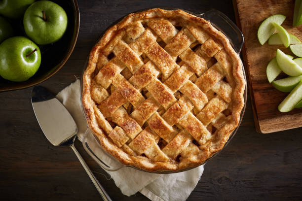

Apple pie recipe

Steps to make an apple pie
This is absolutely the best homemade apple pie you'll ever make! It has a flaky, buttery crust and a tender,
lightly-spiced apple pie filling. Use a combination of apples for best flavor, and bake until the top is golden and the
filling is bubbly!
Ingrediants
- Pastry
- Cooking apples
- 1 cup regular sugar.
- 1/4 cup cornstarch.
- 1 tsp vanilla.
- 1/4 tsp each of ground cloves, cinnamon, nutmeg, pumpkin spice
Steps
- Step 1: Make the Piecrust. First, decide what type of piecrust you want to make—it depends at least in
part on what you want the filling to be. ...
- Step 2: Roll Out the Piecrust and Transfer It to a Pie Plate. ...
- Step 3: Shape the Edges. ...
- Step 4: Add the Filling and Bake. ...
- Step 5: Test for Doneness.